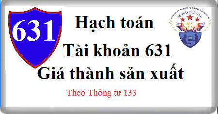

Hướng dẫn cách hạch toán Tài khoản 631 theo thông tư 133, Cách hạch toán giá thành sản xuất, hạch toán kết chuyển chi phí sản xuất dở dang, nguyên vật liệu, nhân công, giá thành sản phẩm nhập kho ...theo phương pháp kiểm kê định kỳ
1. Nguyên tắc kế toán Tài khoản 631 - Giá thành sản xuất
a) Tài khoản này dùng để phản ánh tổng hợp chi phí sản xuất và tính giá thành sản phẩm, dịch vụ ở các đơn vị sản xuất công nghiệp, nông nghiệp, lâm nghiệp và các đơn vị kinh doanh dịch vụ vận tải, bưu điện, du lịch, khách sạn,... trong trường hợp hạch toán hàng tồn kho theo phương pháp kiểm kê định kỳ.
b) Đối với doanh nghiệp hạch toán hàng tồn kho theo phương pháp kê khai thường xuyên không sử dụng tài khoản này.
c) Chỉ hạch toán vào tài khoản 631 các loại chi phí sản xuất, kinh doanh sau:
- Chi phí nguyên liệu, vật liệu trực tiếp;
- Chi phí nhân công trực tiếp;
- Chi phí sử dụng máy thi công (đối với các doanh nghiệp xây lắp);
- Chi phí sản xuất chung.
d) Không hạch toán vào tài khoản 631 các loại chi phí sau:
- Chi phí bán hàng;
- Chi phí quản lý doanh nghiệp;
- Chi phí tài chính;
- Chi phí khác;
đ) Chi phí của bộ phận sản xuất, kinh doanh phục vụ cho sản xuất, kinh doanh, trị giá vốn hàng hóa, nguyên liệu, vật liệu và chi phí thuê ngoài gia công chế biến (thuê ngoài, hay tự gia công, chế biến) cũng được phản ánh trên tài khoản 631.
e) Tài khoản 631 “Giá thành sản xuất” phải được hạch toán chi tiết theo nơi phát sinh chi phí (phân xưởng, tổ, đội sản xuất,...) theo loại, nhóm sản phẩm, dịch vụ…
g) Đối với ngành nông nghiệp, giá thành thực tế của sản phẩm được xác định vào cuối vụ hoặc cuối năm. Sản phẩm thu hoạch năm nào thì tính giá thành trong năm đó, nghĩa là chi phí chi ra trong năm nay nhưng năm sau mới thu hoạch sản phẩm thì năm sau mới tính giá thành.
- Đối với ngành trồng trọt, chi phí phải được hạch toán chi tiết theo 3 loại cây:
+ Cây ngắn ngày;
+ Cây trồng một lần thu hoạch nhiều lần;
+ Cây lâu năm.
- Đối với các loại cây trồng 2, 3 vụ trong một năm, hoặc trồng năm nay, năm sau mới thu hoạch, hoặc loại cây vừa có diện tích trồng mới, vừa có diện tích chăm sóc thu hoạch trong cùng một năm,... thì phải căn cứ vào tình hình thực tế để ghi chép, phản ánh rõ ràng chi phí của vụ này với vụ khác, của diện tích này với diện tích khác, của năm trước với năm nay và năm sau,...Không phản ánh vào tài khoản 631 “Giá thành sản xuất” chi phí trồng mới và chăm sóc cây lâu năm đang trong thời kỳ XDCB.
- Đối với một số loại chi phí có liên quan đến nhiều đối tượng hạch toán hoặc liên quan đến nhiều vụ, nhiều thời kỳ thì phải được theo dõi chi tiết riêng, sau đó phân bổ vào giá thành từng loại sản phẩm có liên quan như: Chi phí tưới tiêu nước, chi phí chuẩn bị đất và trồng mới năm đầu của những cây trồng một lần, thu hoạch nhiều lần (chi phí này không thuộc vốn đầu tư XDCB).
- Trên cùng một diện tích canh tác, nếu trồng xen kẽ từ hai loại cây công nghiệp ngắn ngày trở lên thì những chi phí phát sinh có liên quan trực tiếp đến cây nào sẽ tập hợp riêng cho cây đó (như hạt giống, chi phí gieo trồng, thu hoạch) chi phí phát sinh chung cho các loại cây (như chi phí cày, bừa, tưới tiêu nước…) được tập hợp riêng và phân bổ cho từng loại cây theo diện tích gieo trồng.
- Đối với cây lâu năm, các công việc từ khi làm đất, gieo trồng, chăm sóc đến khi bắt đầu có sản phẩm được xem như quá trình đầu tư XDCB để hình thành nên TSCĐ được tập hợp chi phí vào TK 241 “XDCB dở dang”.
- Hạch toán chi phí chăn nuôi phải theo dõi chi tiết cho từng ngành chăn nuôi (ngành chăn nuôi trâu bò, ngành chăn nuôi lợn…), theo từng nhóm hoặc theo từng loại gia súc, gia cầm. Đối với súc vật sinh sản khi đào thải chuyển thành súc vật nuôi lớn, nuôi béo được hạch toán vào TK 631 “Giá thành sản xuất” theo giá trị còn lại.
h) Tài khoản 631 “Giá thành sản xuất” áp dụng đối với ngành giao thông vận tải phải được hạch toán chi tiết theo từng loại hoạt động (vận tải hành khách, vận tải hàng hóa…). Trong quá trình vận tải, săm lốp bị hao mòn với mức độ nhanh hơn mức khấu hao đầu xe nên thường phải thay thế nhiều lần nhưng giá trị săm lốp thay thế không tính vào giá thành vận tải ngay một lúc khi xuất dùng thay thế, mà phải trích trước hoặc phân bổ dần vào chi phí sản xuất, kinh doanh hàng kỳ.
i) Trong hoạt động kinh doanh khách sạn, hạch toán tài khoản 631 phải được theo dõi chi tiết theo từng loại hoạt động như: Hoạt động ăn uống, dịch vụ buồng nghỉ, phục vụ vui chơi giải trí, phục vụ khác (giặt, là, cắt tóc, điện tín, massage…).
2. Kết cấu và nội dung Tài khoản 631 - Giá thành sản xuất
Bên Nợ:
- Chi phí sản xuất, kinh doanh sản phẩm, dịch vụ dở dang đầu kỳ;
- Chi phí sản xuất, kinh doanh sản phẩm, dịch vụ thực tế phát sinh trong kỳ.
Bên Có:
- Giá thành sản phẩm nhập kho, dịch vụ hoàn thành kết chuyển vào tài khoản 632 “Giá vốn hàng bán”.
- Chi phí sản xuất, kinh doanh sản phẩm, dịch vụ dở dang cuối kỳ kết chuyển vào tài khoản 154 “Chi phí sản xuất, kinh doanh dở dang”.
Tài khoản 631 không có số dư cuối kỳ.
3. Cách hạch toán giá thành sản xuất Tài khoản 631
a) Kết chuyển chi phí sản xuất, kinh doanh, chi phí dịch vụ dở dang đầu kỳ vào bên Nợ tài khoản 631 “Giá thành sản xuất”, ghi:
Nợ TK 631 - Giá thành sản xuất
Có TK 154 - Chi phí sản xuất, kinh doanh dở dang.
b) Cuối kỳ kế toán, kết chuyển chi phí nguyên liệu, vật liệu trực tiếp vào tài khoản giá thành sản xuất, ghi:
Nợ TK 631 - Giá thành sản xuất
Có TK 611 Mua hàng.
c) Cuối kỳ kế toán, kết chuyển chi phí nhân công trực tiếp vào tài khoản giá thành sản xuất, ghi:
Nợ TK 631 - Giá thành sản xuất
Có TK 334 Phải trả người lao động
d) Khi tính số Bảo hiểm xã hội, bảo hiểm y tế, bảo hiểm thất nghiệp, bảo hiểm tai nạn lao động và kinh phí công đoàn của số công nhân trực tiếp sản xuất và cán bộ quản lý sản xuất vào giá thành sản xuất, ghi:
Nợ TK 631 - Giá thành sản xuất
Có TK 338 Phải trả, phải nộp khác (3382, 3383, 3384, 3385, 3388)
đ) Khi phát sinh các khoản chi phí khác phục vụ cho hoạt động sản xuất kinh doanh, ghi:
Nợ TK 631 - Giá thành sản xuất
Có các TK 111, 112, 214, 331 ...
e) Cuối kỳ kế toán, tiến hành kiểm kê và xác định giá trị sản phẩm, dịch vụ dở dang cuối kỳ, ghi;
Nợ TK 154 - Chi phí sản xuất, kinh doanh dở dang
Có TK 631 - Giá thành sản xuất.
g) Giá thành sản phẩm nhập kho, dịch vụ hoàn thành, ghi:
Nợ TK 632 - Giá vốn hàng bán
Có TK 631 - Giá thành sản xuất.
--------------------------------
